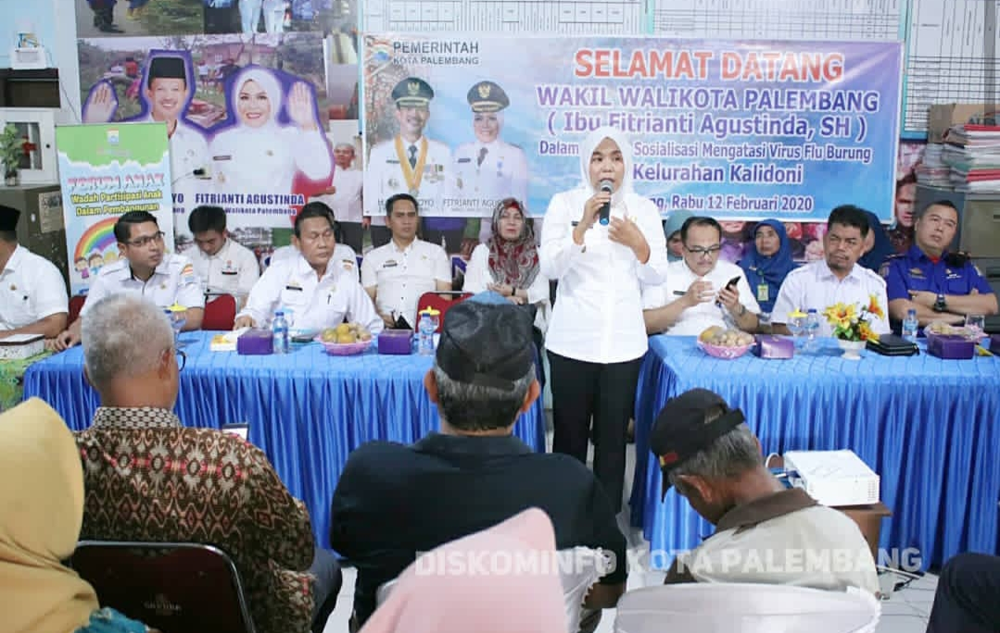

PERAN PEMERINTAH DALAM MENGATASI WABAH FLU BURUNG
Penyebaran virus flu burung memang sulit untuk dicegah. Namun, Pemerintah dapat melakukan hal-hal yang dapat meminimalkan perluasan are terjangkit. Nah Kali ini, ikta akan membahas Tindakan tindakan yang dilakukan pemerintah untuk Meminimalkan penuklaran virus Flu burung
- Memusnahkan unggas di perkotaan yang berada dalam radius satu kilometer dari unggas yang dipastikan terjangkit virus
- Memvaksinasi setiap unggas di radius tiga kilometer dari unggas yang terjangkit flu burung.
- Penambahaan persediaan obat Tamiflu atau Antiflu debanyak 200.000 tablet
- Mensanitasi kandang sehingga kelompok berisiko tinggi seperti peternak juga dapat terhindar dari virus Flu Burung.
- Melakukan pengawasan untuk perdagangan antarpulau
(source : www.liputan6.com)